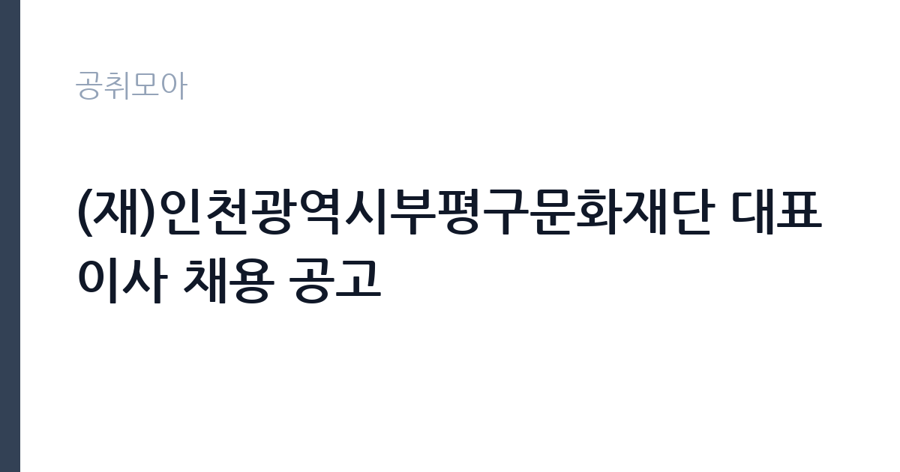

[공공기관] (재)인천광역시부평구문화재단 대표이사 채용 공고
(재)인천광역시부평구문화재단 · 인천 · 마감 2026-10-13 (D-20) · 출처 나라일터

한눈에 보는 모집 조건
| 기관 | (재)인천광역시부평구문화재단 |
|---|---|
| 공고명 | (재)인천광역시부평구문화재단 대표이사 채용 공고 |
| 고용형태 | 임원 |
| 근무지 | 인천 |
| 게시일 | 2026-09-23 |
| 마감일 | 2026-10-13 (D-20) |
지원자격, 이렇게 읽으세요
- 대표이사 1명
- 접수 ~2026-10-13 마감
- 세부 조건은 원문 공고문 확인
지방자치단체 출자출연기관 운영법과 지방공무원법, 재단 인사규정의 결격사유에 해당하지 않아야 하며 병역을 마쳤거나 면제된 분이 대상입니다. 자격기준 여섯 가지 가운데 어느 하나에 해당하면 지원할 수 있으며 문화예술 경영과 행정, 공연장과 도서관 운영 등 관련 분야 경력이 핵심 심사항목이 됩니다. 세부 자격기준은 원문 공고문에서 반드시 확인하시기 바랍니다.
이 공고의 포인트
이 공고의 가치는 기초문화재단 기관장이라는 자리 자체에 있습니다. 부평구문화재단은 부평아트센터와 구립도서관, 청소년시설 등 130명대 인력과 위탁기관을 운영하는 중견 문화재단으로 경영 성과를 남기기에 충분한 규모입니다. 임기 2년에 연임 가능 구조라 중장기 문화정책을 펼칠 수 있으며 인천 문화권 네트워크를 가진 분께는 경력의 정점이 될 수 있는 기회입니다.
전형은 어떻게 진행되나
접수 마감일은 2026년 10월 13일이며 임원추천위원회 심사를 거쳐 선발합니다. 지원서와 직무수행계획서, 경영혁신 방안 등 제출서류 심사와 면접심사가 이어질 것으로 예상되며 세부 일정과 제출서류 양식은 원문 공고문에서 확인하시기 바랍니다. 증빙 가능한 사항만 기재하는 것이 원칙이니 경력증명 서류를 미리 확보하시기 바랍니다.
원문에서 확인한 전형 방식
1. 모집내용 -채용직위: 대표이사 -채용인원: 1명 -근무지: (재)인천광역시부평구문화재단 -임기: 임용일로부터 2년(2026.11.21.~2028.11.20.) ※ 근무실적 평가 후 그 결과에 따라 연임 가능함 -보수: 지방공무원 보수규정[별표13] 제5호 나. 개방형 직위에 임용되는 임기제 공무원 4급 상당 2. 지원자격 -『지방자치단체 출자·출연 기관의 운영에 관한 법률』제10조 등에 해당되지 않는 사람 -『(재)인천광역시부평구문화재단 인사규정』제13조에서 정한 결격사유가 없어야 하며, 다른 법령에 의해 지원 자격이 정지되지 아니한 사람으로서 다음의 자격요건 중 가.항의 필수요건을 갖추고 나.항 중 어느 하나에 해당하는 사람 > 일반사항 1)『지방자치단체 출자·출연 기관의 운영에 관한 법률』제10조 등에 해당되지 않는 사람 2)『지방공무원법』제31조에 규정된 결격사유가 없어야 하며, 다른 법령에 의해 지원 자격이 정지되지 아니한 사람 3)『공익법인의 설립․운영에 관한 법률』제5조제6항제5호에 해당되지 않는 사람 4) 남자의 경우 병역을 필 하였거나 면제된 사람 5) 거주지 및 연령 제한 없음 > 자격기준 : 아래 ① ~ ⑥ 중 어느 하나에 해당하는 자
이런 분께 추천해요
- 문화재단과 공연장, 도서관 등 문화시설 경영 경험이 풍부한 분께 적합합니다.
- 지방행정과 문화정책 분야에서 기관 운영 비전을 가진 분께 추천합니다.
- 인천과 부평 지역 문화 네트워크를 바탕으로 경영 성과를 내고 싶은 분께 어울립니다.
지원 전 체크리스트
- 여섯 가지 자격기준 가운데 본인이 해당하는 항목을 원문에서 확인했습니다.
- 제출서류 양식과 증빙서류를 빠짐없이 준비했습니다.
- 직무수행계획서와 경영혁신 방안을 재단 현황에 맞춰 작성했습니다.
- 마감일과 접수처, 문의처를 원문에서 확인했습니다.
모집 일정과 제출 타이밍
마감일은 10월 13일로 접수기간이 약 3주입니다. 기관장 공고는 직무수행계획서와 경영 구상의 완성도가 당락을 가르는 만큼 충분한 작성 시간을 확보하시기 바랍니다. 재단 홈페이지의 경영공시와 성과계획 자료를 먼저 분석한 뒤 계획서를 쓰시는 것을 권합니다.
직무 이해하기: 공공기관
부평구문화재단은 기획경영본부와 문화사업본부, 도서관본부를 두고 부평아트센터와 생활문화센터, 구립도서관, 청소년시설 등을 운영하는 인천 대표 기초문화재단입니다. 대표이사는 재단 경영 전반과 인사, 예산을 총괄하며 부평구와 이사회, 지역사회를 잇는 역할을 맡습니다. 문화도시 사업과 생활문화 진흥 같은 정책 과제 대응도 중요한 책무입니다.
자기소개서 작성 팁
기관장 지원서에서는 경영 철학과 재단 진단, 임기 중 목표를 수치와 함께 제시하셔야 합니다. 부평구의 문화자원과 재단의 강점과 약점을 분석한 뒤 관객 개발과 재정 자립, 조직 혁신 방안을 구체적으로 쓰시기 바랍니다. 과거 경영 성과는 임기와 실적 수치로 증명하는 것이 설득력을 높입니다.
면접 준비 포인트
면접에서는 재단 현안에 대한 진단과 해법을 질문받을 가능성이 큽니다. 시설 운영 효율화와 지역 예술인 협력, 청년 문화정책 등 부평 현안에 대한 견해를 정리해 두시기 바랍니다. 이사회와 노조, 지자체라는 세 주체와의 소통 방안도 자주 묻는 항목이니 본인의 경험을 사례로 준비하시기 바랍니다.
급여·근무조건 읽는 법
보수는 지방공무원 보수규정 별표에 따른 개방형 직위 4급 상당 임기제 공무원 수준으로 공고문에 명시되어 있습니다. 정확한 연봉 금액은 공개되어 있지 않으므로 원문 공고문과 재단 임원추천위원회 문의를 통해 확인하시기 바랍니다. 기관장급 성과계약과 경영평가 결과가 보수와 연임에 연동되는 구조이니 지원 전에 관련 규정을 살펴보시기 바랍니다.
자주 묻는 질문
- 임기와 연임 조건은 어떻게 되나요?
임기는 임용일로부터 2년이며 근무실적 평가 결과에 따라 연임이 가능합니다. 세부 평가 기준은 재단 규정과 성과계약서에서 확인하시기 바랍니다. - 거주지와 연령 제한이 있나요?
공고문에 거주지와 연령 제한 없음이 명시되어 있습니다. 결격사유와 자격기준 충족 여부가 핵심이니 원문에서 확인하시기 바랍니다. - 어떤 서류를 준비해야 하나요?
지원서와 직무수행계획서, 경력 증빙서류 등이 필요하며 증빙 가능한 사항만 기재하는 것이 원칙입니다. 세부 목록과 양식은 원문 공고문에서 확인하시기 바랍니다.
함께 보면 좋은 공고
[공공기관] 발전공기업 통합실무지원단장 채용공고 — 마감 2026-10-08[공공기관] [설악산] 설악산국립공원 기간제 직원[환경관리(한시인력)] 채용 공고 — 마감 2026-10-01[공공기관] 2026년도 한국등산트레킹지원센터 기간제근로자(보훈 제한경쟁) 채용 재공고 — 마감 2026-10-07출처: 나라일터 공개정보를 바탕으로 공취모아가 정리한 안내글입니다. 모집 조건·일정은 변경될 수 있으니 지원 전 반드시 원문 공고문을 확인하세요. 본 글은 정보 제공용이며 합격을 보장하지 않습니다.